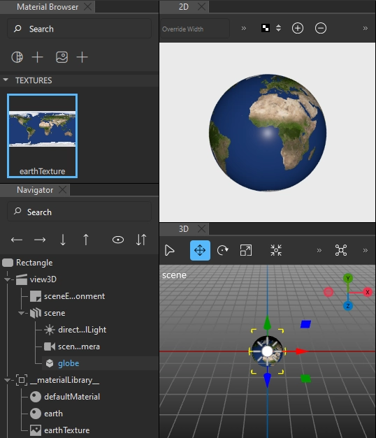
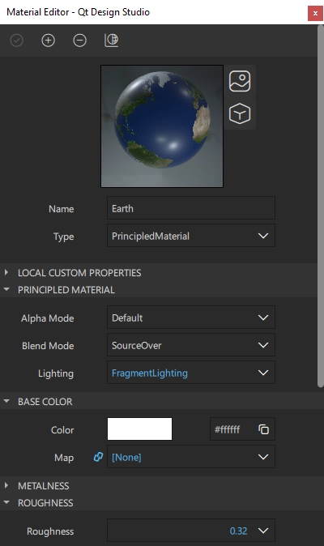
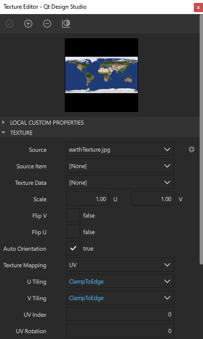

Textures
You can use the Texture component to attach textures to materials. You specify an image to use as the source file for the Texture, and also define how it is mapped to meshes in a 3D scene.

Selecting the Mapping Method
To specify the method of mapping to use when sampling a texture, select UV, Environment, or LightProbe in the Texture mapping field.
UV mapping is the process of projecting 2D images to the surface of a 3D model for texture mapping. The letters U and V denote the axes of the 2D texture because x, y, and z are already used to denote the axes of the 3D object in the model space. You can paint the polygons that make up a 3D object with color and other surface attributes from a UV texture map. Pixels in the image are assigned to surface mappings on the polygon. Usually this is done by programmatically copying a triangular piece of the image map and pasting it onto a triangle on the object.
UV mapping is used by default for diffuse and opacity maps. It sticks the image to the mesh, so that a particular same portion of the image always appears on a particular vertex, unless you animate the UV properties.
Environment mapping is used by default for specular reflection. It projects the image onto the material as though it is being reflected from the material. Using Environmental mapping for diffuse maps provides a mirror effect.
Light probe mapping is used by default for HDRI sphere maps of light probes. For more information about light probes, see Using Highlights and Reflections.
To use image data from a file, specify the path to the file in the Source field. To use a 2D Qt Quick QML type as the source, specify the type in the Source item field. The type is rendered as an offscreen layer. If you specify the source item, any image you might specify as a source is ignored.
Note: Currently, there is no way to forward input events to the Item used as a texture source.
UV Scaling
The U and V scale properties define how to scale the U and V texture coordinates when mapping to a mesh's UV coordinates.
Scaling the U value when using horizontal tiling specifies how many times the texture is repeated from left to right, while scaling the V value when using vertical tiling specifies the repetition from bottom to top.
To control how the texture is mapped when the U scaling value is greater than 1, set the horizontal tiling mode in the U tiling field. To control how the texture is mapped when the V scaling value is greater than 1, set the vertical tiling mode in the V tiling field.
To specify that the texture is not tiled, but the value on the edge is used instead, select ClampToEdge. To repeat the texture and mirrored it over the x or y axis, select MirroredRepeat. To repeat the texture over the x or y axis, select Repeat.
Setting UV Transform Properties
To offset the U coordinate mapping from left to right, set the position of the component in the U position field. To offset the mapping from bottom to top, set it in the V position field.
Specify the U and V pivot points in the U and V pivot fields.
To rotate the texture around the pivot point, specify rotation as degrees in the UV rotation field. A positive value indicates clockwise rotation.
For more information about rotating and pivoting components in the local coordinate space, see Managing 3D Transformations.
Applying Textures to Materials
To create and apply a texture on the material from an image:
- Drag an image from Assets to a material in Material Browser.
- Select a property from the list of properties.
- Select Apply.
Alternatively, you can add textures to materials as instructed in Working with Textures.
Note: If the colors in your texture are not visualized correctly, try setting the Base Color in Material Editor to white (#ffffff).

To change the source file for the texture:
- Double-click the texture in Material Browser.
- In Texture Editor, select next to Source.
- Select the new texture.
- Select Open.
